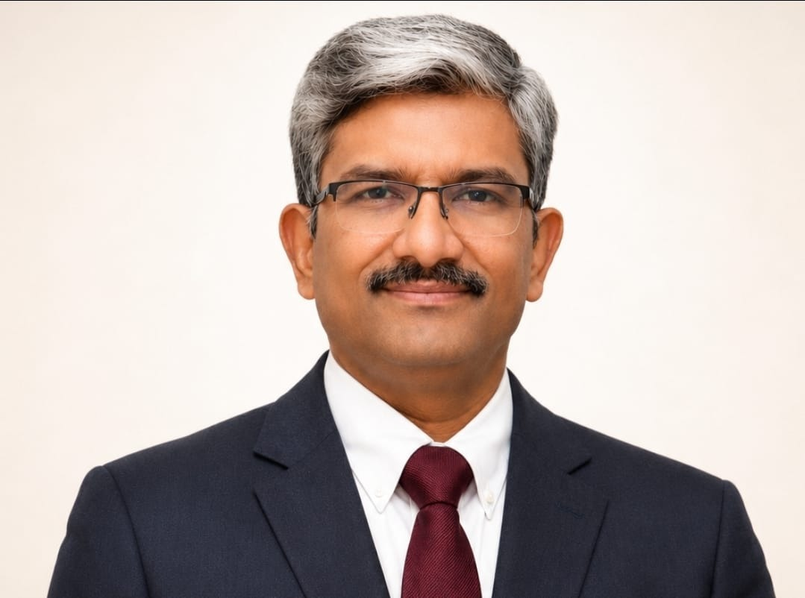

دليل الأطباء
د. أديتيا غوبتا
جراحة الأعصاب · الأورام العصبية · الجراحة الإشعاعية للجهاز العصبي
المنصب المدرج حالياً: رئيس قسم جراحة الأعصاب والجراحة الإشعاعية للجهاز العصبي، والرئيس المشارك لمركز سايبر نايف · مستشفيات أرتيمس، غوروغرام
طلب استشارة عبر علاج مي إنديا
نبذة عن الطبيب
تدرج مستشفيات أرتيمس د. أديتيا غوبتا حالياً رئيساً لجراحة الأعصاب والجراحة الإشعاعية للجهاز العصبي، والرئيس المشارك لمركز سايبر نايف في غوروغرام. كما تدرجه ضمن خدمات جراحة الأعصاب والجراحة الإشعاعية والأورام العصبية.
يمكن لفريق علاج مي إنديا مساعدة المرضى الدوليين في تنسيق إرسال التقارير الطبية وطلبات الاستشارة والتواصل مع فريق المستشفى المعني.
يحدد الأطباء المؤهلون مدى ملاءمة العلاج والخطة الطبية بعد تقييم الحالة بشكل فردي.